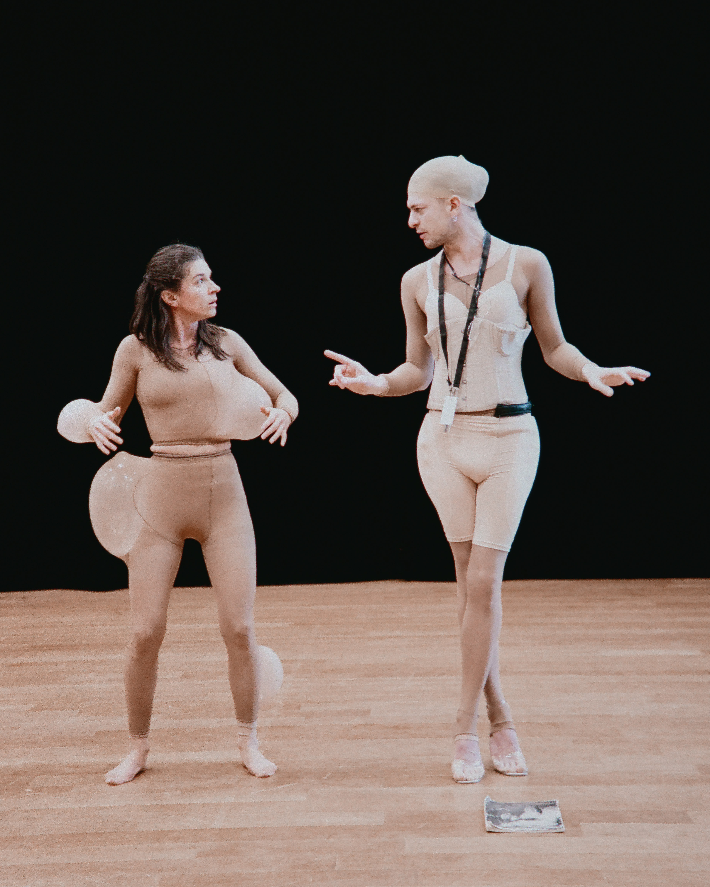
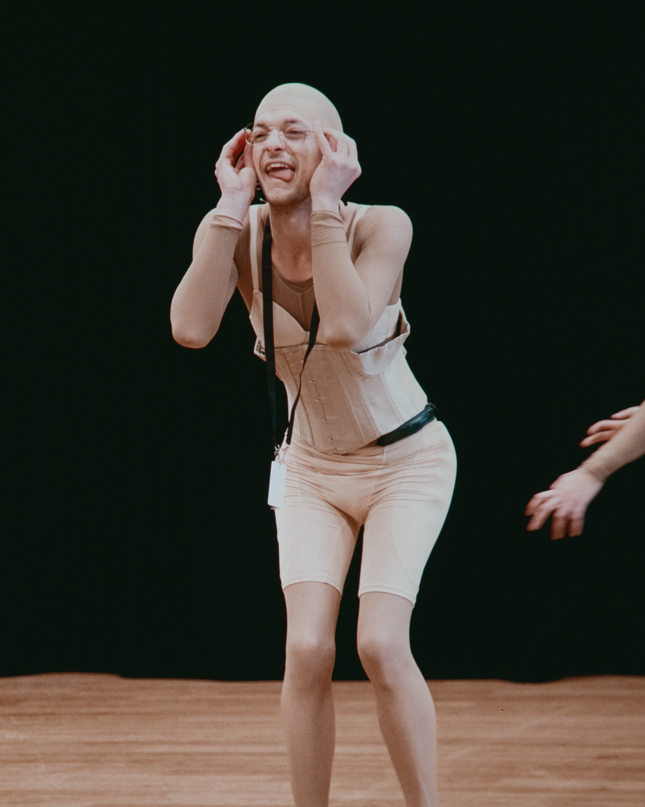
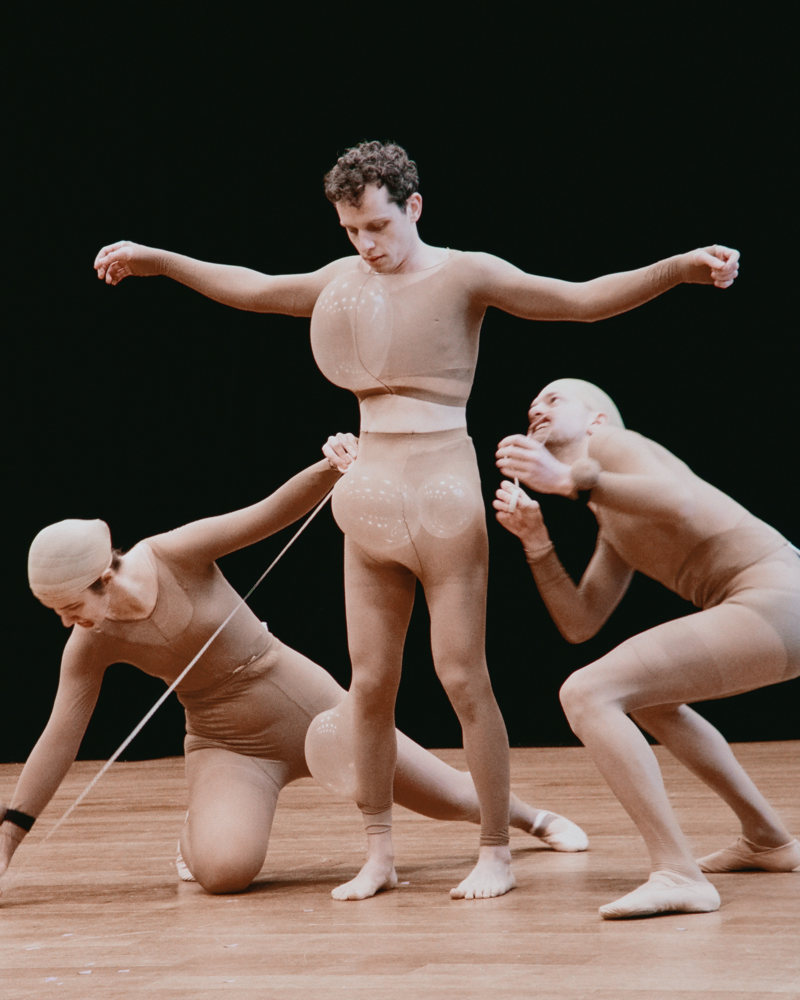
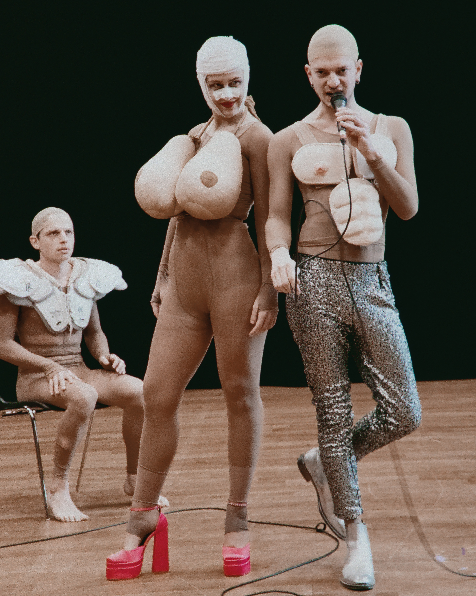
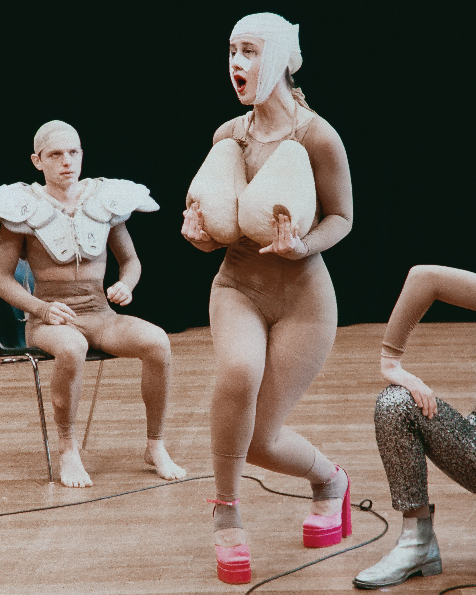

Andro et Gyne sont les fragments d'un corps autrefois uni, séparés par le châtiment de Zeus — propulsé·es dans un monde-immeuble dystopique qui ne cesse de les façonner, les classer, les corriger.
Andro and Gyne are fragments of a body once whole, sundered by Zeus's punishment — hurled into a dystopian building-world that never stops shaping, classifying, correcting them.

Cité verticale où les dominants habitent les hauteurs et les précaires les sous-sols. Sur leur chemin : trois secrétaires autoritaires qui tamponnent les identités au bureau des déchirements, un Grand Couturier sadique qui façonne les corps à coups de prothèses et d'injonctions genrées, un jeu télévisé qui transforme le désir en spectacle rentable.
Chaque institution censée aider est une machine à exploiter le manque.
A vertical city where the dominant inhabit the heights and the precarious the basements. On their way: three authoritarian secretaries who stamp identities at the Office of Tearings, a sadistic Grand Couturier who shapes bodies with prosthetics and gendered injunctions, a televised game show that turns desire into a profitable spectacle.
Every institution meant to help is a machine for exploiting lack.


Gyne se perd dans le labyrinthe avant de tomber sur un cabaret clandestin à l'étage -42, où Lazare, enfant sauvage, pieds nus dans un monde de talons, lui souffle une autre façon d'exister.
Andro participe à Alter Ego dans l'espoir de retrouver l'autre moitié. Quand ils et elles se retrouvent enfin, c'est pour se recoudre l'un·e à l'autre avec une aiguille volée au couturier — et mourir.
Gyne loses herself in the labyrinth before stumbling onto a clandestine cabaret on floor -42, where Lazare — a wild child, barefoot in a world of heels — whispers another way of existing.
Andro takes part in Alter Ego hoping to find the other half. When they finally find each other, it is to sew themselves back together with a needle stolen from the couturier — and die.

Copi nous a appris ça : ne jamais séparer le politique du burlesque, le tragique du ridicule. Lazare nous a donné la langue comme matière première — la poésie et la folie. Le Munstrum : le corps poussé jusqu'à la créature, la déformation comme outil dramaturgique. Wajdi Mouawad : le souffle épique, la question des origines, l'humour tenu dans le tragique sans que l'un détruise l'autre.
Copi taught us this: never to separate the political from the burlesque, the tragic from the ridiculous. Lazare gave us language as raw material — poetry and madness. Munstrum: the body pushed to the creature, deformation as dramaturgical tool. Wajdi Mouawad: the epic breath, the question of origins, humour held inside tragedy without one destroying the other.
